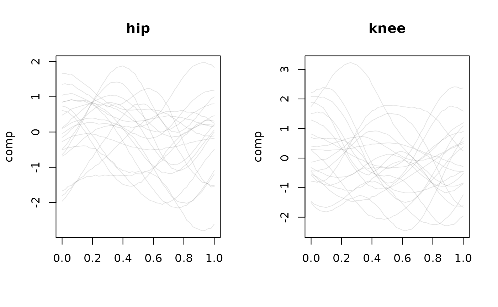

tfb_mfpc() computes a multivariate functional principal component
analysis (MFPCA) of vector-valued functional data in the sense of
Happ & Greven (2018): a single set of scalar scores per curve, shared across
all d components, together with vector-valued eigenfunctions
\(\Psi_m: \mathcal{T} \to \mathbb{R}^d\), so that
\(f_i(t) \approx \mu(t) + \sum_m s_{im}\,\Psi_m(t)\).
Usage
tfb_mfpc(data, ...)
# S3 method for class 'tf_mv'
tfb_mfpc(
data,
weights = c("inverse_variance", "snr", "equal"),
pve = 0.995,
npc = NULL,
uni_pve = 0.995,
method = fpc_wsvd,
...
)
# S3 method for class 'list'
tfb_mfpc(data, arg = NULL, domain = NULL, ...)
# Default S3 method
tfb_mfpc(data, arg = NULL, domain = NULL, ...)
is_tfb_mfpc(x)
tf_mfpc_scores(x)
tf_mfpc_efunctions(x)Arguments
- data
a
tfd_mv()/tfb_mvobject, a (named)listof univariatetfvectors, or anythingtfd_mv()accepts.- ...
further arguments forwarded to the univariate
method. As intfb_mv(), a...argument given as a list named by the component names is distributed per component.- weights
component weighting scheme for the joint analysis. Either a string –
"inverse_variance"(default; \(w_j = 1 / \sum_l \lambda^{(j)}_l\), so each component contributes equal total variance),"snr"(signal-to-noise: retained variance over the discarded-variance tail of the univariate fit), or"equal"(\(w_j = 1\)) – or a numeric vector ofdnon-negative weights. Weights are rescaled to sum tod(so"equal"gives all-ones).- pve
proportion of variance explained used to truncate the multivariate components (default
0.995). Ignored ifnpcis given.- npc
number of multivariate FPCs to retain (overrides
pve).- uni_pve
proportion of variance explained for the univariate FPCA of each component (default
0.995); forwarded aspveto the univariatemethod.- method
univariate FPCA method, see
tfb_fpc(). Defaults tofpc_wsvd().- arg
evaluation grid for raw (list/matrix/array) inputs, forwarded to
tfd_mv().- domain
range of
arg, forwarded totfd_mv().- x
a
tfb_mvobject, ideally one returned bytfb_mfpc().
Value
a tfb_mv object whose d components are tfb_fpc() objects with
shared per-curve scores; is_tfb_mfpc() is TRUE for it. Use
tf_mfpc_scores() and tf_mfpc_efunctions() to extract the shared scores
and the multivariate eigenfunctions.
is_tfb_mfpc(): a logical flag.
tf_mfpc_scores(): an n x M matrix of shared multivariate FPC
scores (rows = curves, columns = components).
tf_mfpc_efunctions(): a tfd_mv of length M holding the
multivariate eigenfunctions \(\Psi_m\) (one "curve" per component).
Details
This is qualitatively different from tfb_mv(data, basis = "fpc"), which
fits an independent FPCA per component (separate eigenfunctions and
separate scores) and so cannot capture joint variation across dimensions.
The estimator first runs the univariate FPCA (see tfb_fpc() / fpc_wsvd())
on each component to obtain univariate scores \(\xi^{(j)}\) and
eigenfunctions \(\phi^{(j)}\), then eigendecomposes the joint covariance of
the (weighted) stacked scores. With component weights \(w_j > 0\) the
shared scores and multivariate eigenfunctions are
$$s_{im} = \sum_j \sqrt{w_j} \sum_l [c_m]^{(j)}_l \xi^{(j)}_{il}, \qquad
\Psi_m^{(j)} = \frac{1}{\sqrt{w_j}} \sum_l [c_m]^{(j)}_l \phi^{(j)}_l,$$
where \(c_m\) are the eigenvectors of the weighted joint score covariance.
The returned object is a tfb_mv() whose components are tfb_fpc() objects
sharing identical per-curve scores; cast it back to evaluations with
as.tfd_mv() / vec_cast(), and project new tfd_mv data onto the
fitted basis with tf_rebase(). Like the univariate FPCA, the estimator
targets data observed on a common grid per component; re-scoring new data
evaluates it on each component's estimation grid, so new curves must be
observable there.
References
Happ, Clara, Greven, Sonja (2018). “Multivariate functional principal component analysis for data observed on different (dimensional) domains.” Journal of the American Statistical Association, 113(522), 649–659.
See also
tfb_mv() for independent per-component FPCA, tfb_fpc() /
fpc_wsvd() for the univariate machinery.
Other tf_mv-class:
plot.tf_mv(),
tf_arclength(),
tf_geom,
tf_mv_methods,
tfb_mv(),
tfd_mv()
Other tfb_fpc-class:
fpc_wsvd(),
tfb_fpc()
Examples
set.seed(1)
g <- tfd_mv(list(hip = tf_rgp(20), knee = tf_rgp(20)))
m <- tfb_mfpc(g, pve = 0.99)
m
#> tfb_mv<d=2>[20] (hip, knee): [0, 1] -> [-2.804624, 1.972252] x [-2.461474, 3.231401]
#> components in basis representation: 8 MFPCs
#> [1]: ▆▆▆▆▆▆▆▆▆▆▆▅▅▅▅▅▅▅▅▅▅▆▆▆▆▆ | ▄▄▄▄▄▄▅▅▅▅▆▆▆▆▆▆▆▅▅▄▄▃▂▂▂▁
#> [2]: ▇▇▇▇▆▆▆▆▆▅▅▅▅▅▅▅▆▆▆▅▅▅▅▅▅▅ | ▃▃▃▃▄▄▄▅▅▅▅▅▅▅▅▄▄▄▃▃▃▃▂▂▂▃
#> [3]: ▆▆▆▆▆▆▆▅▅▄▄▃▃▂▂▂▁▁▁▁▁▁▁▂▂▃ | ▂▁▁▁▂▂▂▂▃▃▃▂▂▂▂▂▁▁▁▁▁▁▁▁▁▂
#> [4]: ▄▄▅▅▆▇▇██████▇▇▆▅▅▅▅▅▅▅▆▆▇ | ▇▇▇▇▆▆▅▅▄▃▃▃▃▃▃▃▃▄▄▅▅▆▆▆▆▆
#> [5]: ▆▆▅▅▄▄▃▃▂▂▂▂▂▂▂▃▃▄▄▄▅▅▅▅▅▅ | ▅▅▅▅▄▄▄▄▄▃▃▃▃▃▃▃▃▄▄▄▄▅▅▅▅▆
#> [6]: ▅▅▅▅▅▅▅▅▅▅▅▅▅▅▅▅▆▆▇▇██████ | ▇▇▇███████▇▇▆▆▅▅▅▄▄▄▄▄▄▄▃▃
#>
#> [....] (14 not shown)
dim(tf_mfpc_scores(m))
#> [1] 20 8
tf_mfpc_efunctions(m)
#> tfd_mv<d=2>[8] (hip, knee): [0, 1] -> [-1.658433, 1.351106] x [-1.564996, 1.729235]
#> components based on 51 evaluations each, interpolation by tf_approx_linear
#> [1]: ▄▄▄▄▃▃▃▃▃▃▂▂▂▂▂▂▂▂▁▁▁▁▁▁▂▂ | ▃▃▃▃▂▂▂▂▁▁▂▂▂▂▂▂▂▂▂▂▃▃▃▃▄▄
#> [2]: ▇▇▇▇▇▆▆▆▆▆▅▅▅▅▄▄▄▃▃▂▂▂▁▁▂▂ | ▆▇▇▇▇▆▆▆▆▆▆▆▆▆▆▅▅▄▄▃▂▁▁▁▁▁
#> [3]: ▂▂▂▂▂▂▂▂▂▂▂▂▂▂▂▂▂▃▃▃▃▃▃▃▃▃ | ▇▇██▇▇▇▇▆▆▆▆▆▆▆▆▆▆▆▆▆▆▆▆▆▆
#> [4]: ▂▂▂▃▄▄▅▆▆▆▆▆▆▆▆▅▅▄▄▄▄▄▅▅▅▅ | █████▇▆▅▄▂▂▁▁▁▁▁▁▂▂▃▃▄▅▅▆▆
#> [5]: ▃▃▃▄▄▅▅▆▆▇▇▇▇▇▇▆▆▅▄▃▂▁▁▁▁▁ | ▄▄▄▃▃▃▃▃▃▃▄▄▄▅▅▆▆▇▇▇▇▇▇▇▇▆
#> [6]: ████▇▇▇▆▆▅▄▄▃▃▂▂▁▁▂▂▃▄▅▆▆▇ | ▄▄▄▄▄▅▅▅▅▅▄▄▃▃▃▃▃▄▅▅▆▇████
#>
#> [....] (2 not shown)
# reconstruct and project new data:
plot(as.tfd_mv(m), type = "facet")

g_new <- tfd_mv(list(hip = tf_rgp(3), knee = tf_rgp(3)))
tf_rebase(g_new, m)
#> tfb_mv<d=2>[3] (hip, knee): [0, 1] -> [-2.211037, 1.183598] x [-1.334569, 1.052306]
#> components in basis representation: 8 MFPCs
#> [1]: ▅▅▅▅▄▄▄▄▄▄▄▄▅▅▅▆▆▆▅▅▅▄▄▃▃▃ | █▇▆▅▃▂▁▁▁▁▂▃▃▄▅▆▆▆▆▆▆▆▅▆▆▆
#> [2]: ▄▄▅▅▅▅▆▆▆▇▇▇▇▇▇▆▆▅▄▃▂▁▁▁▁▁ | ▆▆▆▆▆▆▆▆▆▅▅▄▄▄▃▃▃▃▃▃▄▄▅▆▆▇
#> [3]: █████▇▇▇▇▇▇▇▇▇▇▇▇▇▇▆▆▆▅▅▅▅ | ▇▇▇████████▇▇▆▆▆▅▅▅▅▆▆▇▇▇█
#>